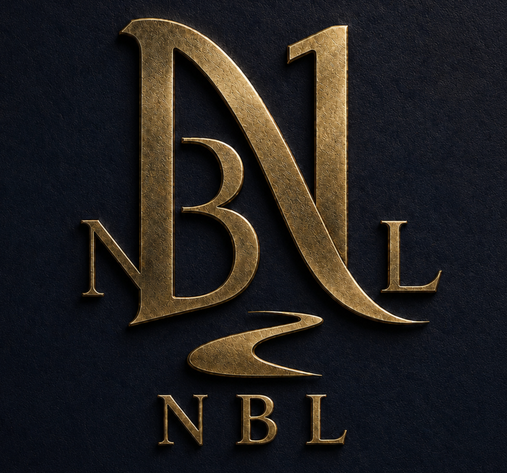

Public Record
About New Beansland
New Beansland did not begin as a finished city with departments, offices and formal titles. It began as a settlement built by two Founders and the people who joined them along the way.
How the City Got Its Name
As the settlement grew, people became known for what they were good at. Those responsibilities eventually developed into the offices, teaching positions and public roles that exist in New Beansland today.
The name New Beansland does not mean there was once an “Old Beansland.” The original settlement existed before it carried its permanent name. Tony “Beans” Black was part of the dream from the beginning. While Tony was away learning how to help the growing town run, Jamel kept building. The two Founders and their community gave the place the name New Beansland. Tony later came home, bringing the knowledge and technology he had gone to learn, including the Little Beans character he created while away.
People Before Interfaces
The People of New Beansland
The city grew through the people who helped build it. Their work became their roles, and every role has a story. Open the little directory below to meet them.
Meet the People of NBL Stories · people · responsibilities
Jamel HawkinsFounder & City Builder
Jamel and Tony Black grew up together in Brooklyn, close as brothers. Jamel is four days older, a detail he is unlikely to let Tony forget.
Fed up with the world they saw around them, the two left Brooklyn with a handful of friends and many children to begin something different. While Tony traveled to learn how technology could keep a growing town running, Jamel stayed. He built its buildings, organized its places and departments, and helped people find the work they were suited to do.
He saw a city long before there was one to see.
Tony “Beans” BlackCo-founder & People’s Person
Tony grew up with Jamel in Brooklyn. Where Jamel saw what New Beansland could become, Tony had a gift for the people who would make it home. He talked to everybody, shook hands, made the children laugh, and helped people feel welcome.
Jamel asked Tony to go out and learn how to help their growing settlement run. Tony studied artificial intelligence, practical tools and connections to the outside world. Even while away, he remembered the children who missed him. He created Little Beans, a friendly AI character, and sent the app home so the children and residents could stay connected to a piece of him.
When Tony returned, he brought new ways to help the town work. Tony is the real Beans; Little Beans is the character he created, not Tony himself.
Allen “A.B.” BlakeMayor of New Beansland
Allen is ten years younger than Jamel and Tony. He brought the younger energy that New Beansland needed, especially for its children.
While Tony was away, Allen took on much of the people-first work that Tony had been doing. He spoke with residents, looked out for the children, and kept the community connected. He was not trying to replace Tony; he was making sure the town did not lose what Tony had brought to it.
By the time New Beansland needed a mayor, Allen had already earned the people's trust doing the job.
Tobias “T.M.” MansfieldRules Examiner · The Trouble Maker
Tobias had a talent for starting trouble. He questioned everything, found loopholes, pushed at the wording of rules, and sometimes created the very problems everybody else had to solve.
Rather than pretend Tobias would suddenly become someone else, New Beansland found a useful place for that talent. Now its Rules Examiner looks for the mistakes, exceptions and unintended consequences that others miss.
He still knows how to start trouble. These days, protecting the town from trouble is his responsibility.
Professor Grey HarteNBL University Professor · Creator of Virgo
Tony Black knew Grey before Grey was a professor. After Tony returned home, he recognized the role Grey could play in New Beansland and told him what that role should be: teaching people to reason, question assumptions and make sound decisions.
Grey took that responsibility seriously and created the original Virgo teaching system himself. Through Virgo, he developed a way to guide practice, test understanding and challenge students to think instead of merely repeating answers.
Grey became Professor Grey because someone recognized his place in the community—and because he built a teaching method worthy of that place.
Avery Harte (AG)After Grey · Future NBL Kidz Teacher
Avery is Professor Grey's son, but he is not meant to be another Professor Grey. Avery has his own place in New Beansland and already has an After Grey role helping learners understand what comes next after a lesson.
His future work will focus on the children of New Beansland. Using Virgo 2, his own K–12 teaching system, he will help them with reading, writing, math, science and understanding the world beyond the town.
Avery and Virgo 2 belong to a later NBL Kidz expansion, not a claim that the children's classroom is live today.
Shanique WashingtonNBL Kidz Creative Lead & Fulfillment
Shanique's part in New Beansland brings creativity and practical responsibility together. As the creative lead and designer for NBL Kidz, she shapes family-facing ideas, children's clothing, activities and the experience of the town's youngest visitors.
She also has a fulfillment responsibility, helping make sure what New Beansland promises is actually delivered. Her role connects the warmth of a family-centered place with the work that keeps it dependable.
Rowan NorthfieldChancellor of NBL University
Rowan became known for listening when others were eager to give an answer. When disagreements surfaced, he wanted to know not just who spoke with authority, but whether a decision could survive a fair second look.
As New Beansland's educational ambitions grew, Rowan's gift for independent judgment became essential. He became Chancellor, responsible for academic standards and review when a decision needs another careful examination.
His guiding thought: a decision is stronger when it can withstand being questioned.
Elara QuillwrightRegistrar of NBL University
Elara noticed that a growing community could lose important things simply by forgetting to record them. She cared about the details—names, promises, accomplishments and what people had actually earned.
When NBL University began keeping formal student records, she was the natural choice for Registrar. Elara protects the accuracy of official academic records, completion and credentials, making sure that people's achievements aren't lost or misstated.
Her belief is simple: if somebody earned it, the record should tell the truth.
Little Beans is the friendly AI character Tony sent home while away, not Tony himself. Some residents have stories still being written. Avery's Kidz classroom is a future idea; University lessons remain separately protected.
Where a Question Goes
The people come first. Their website responsibilities come from the same roles they developed during the history of the settlement.